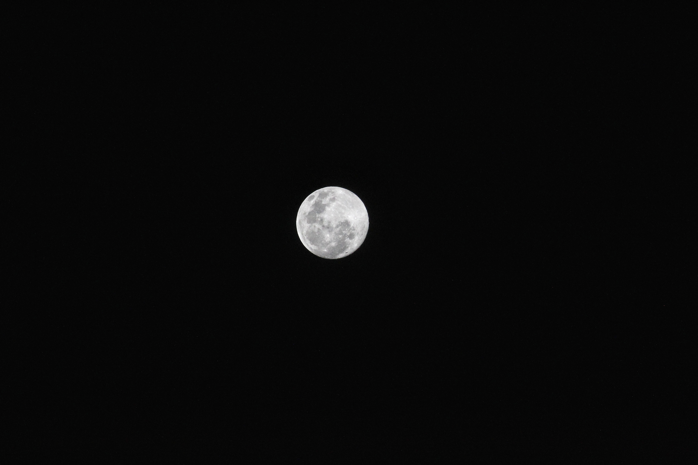
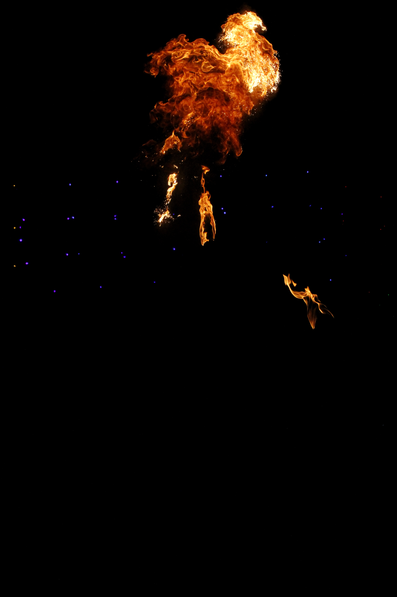

Journal
Notes on light, texture, and quiet practice.
Short reflections on visual craft, observational practice, and the quiet influence of form and environment. A minimal journal for creative process and personal interest.
Exploring photography and design through concise journal entries that connect the sensory details of composition with a calm, considered approach. The style is minimal, focused, and shaped around professional interests in visual structure.
Luminous stillness and quiet color
Fragments of light and texture appear when composition is allowed to breathe. This sequence highlights subtle changes in tone and the geometry of everyday surfaces.



Rhythms in form and texture
Paired elements create a sense of movement. Here, the collage balances denser shapes with open highlights to make the eye travel across the composition.

Visual calm through small edits
Each group of images is arranged like a study. The goal is to keep variations gentle while still emphasizing a crafted sense of shape, scale, and subtle tension.